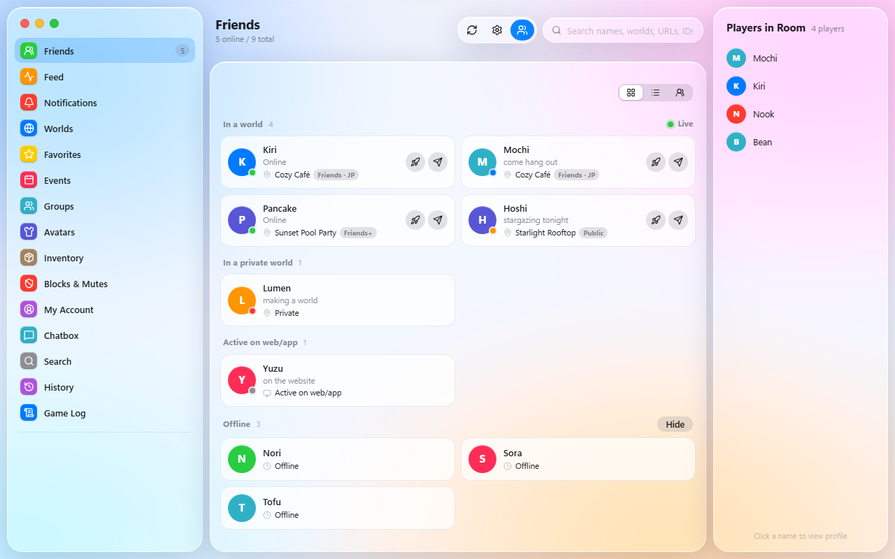

VRC Nook
A lightweight, cozy all-in-one VRChat companion for Windows: friends, game log, in-game chatbox, a VR-friendly keyboard and an animated emoji maker.
Download for Windows
Everything in one small app
One file, about 21 MB, so it's light on your PC.